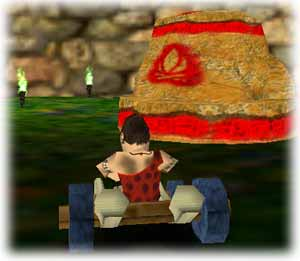
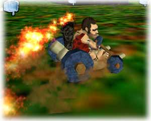

JAKTEN PÅ ELDEN
Detta är en typ av spel för flera spelare som liknar det vanliga spelet "Fånga flaggan". Det finns två lag: det röda laget och det gröna laget. Det är bäst att spela detta spel med jämnt antal spelare, så att det är lika många på varje lag.
Varje lag börjar hemma på sin hemmabas. Intill deras hemmabas finns det andra lagets 6 facklor:

En spelare i det röda laget vid den röda basen
Målet är att ta sig till det andra lagets bas, hämta facklorna och föra dem hem till den egna hemmabasen. Det röda lagets bas har en röd flagga och alla deras facklor har ett rödaktigt sken. Det gröna lagets bas har en grön flagga och alla deras facklor har ett grönaktigt sken. Så medlemmarna i det röda laget måste hitta alla röda facklor och föra dem till basen med den röda flaggan. Det omvända gäller för det gröna laget.

En röd spelare med en röd flagga
Du kan ta motståndarnas facklor och gömma dem var som helst ute i terrängen. För att ta en fackla springer man bara på den. För att släppa en fackla, trycker man på en Kasta-tangent. För att få en annan spelare att släppa sin fackla, kan man antingen springa på dem eller träffa dem med ett vapen som exploderar. För att placera en fackla på hemmabasen behöver man bara nudda basen, så kommer facklan automatiskt att placeras där.
Det första laget som hämtar alla facklorna har vunnit.